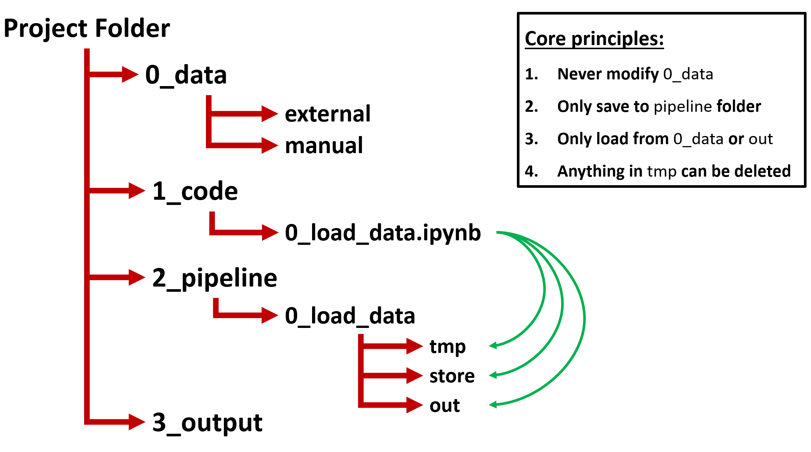
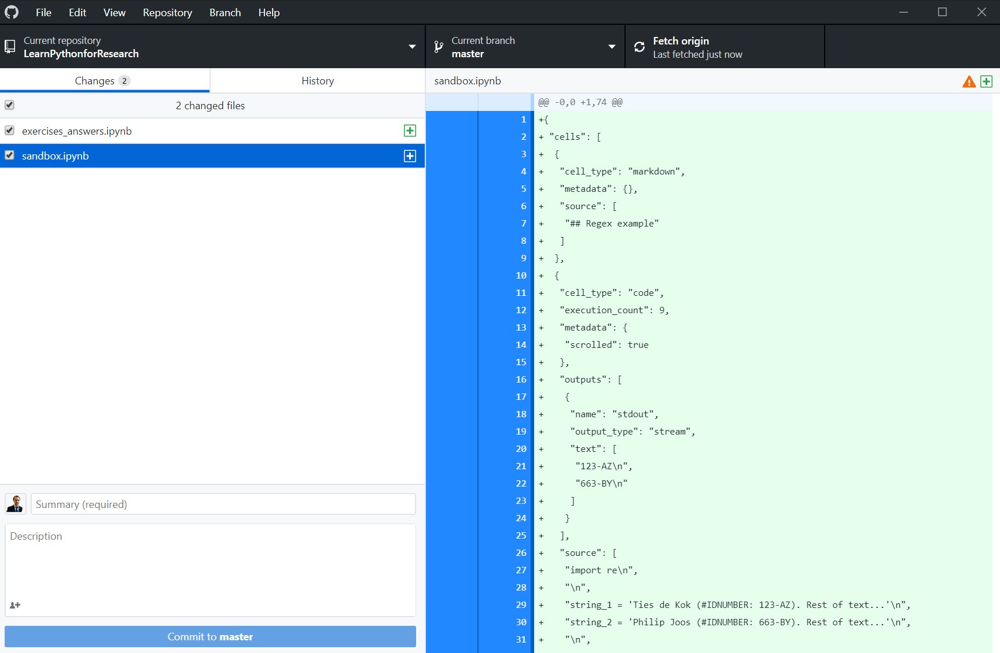

class: center, titleslide <br><br> # Python Workshop: # Miscellaneous Topics <br> ## <a href="http://www.tiesdekok.com" target="_blank">Ties de Kok</a> ## Tilburg University --- layout: true class: mainlayout <div class='custom_footer'><span>Python Workshop | Miscellaneous Topics | Ties de Kok (© 2018)</span></div> --- class: tocslide .left-column[ ## Agenda ] .right-column[ ### What are we going to discuss today? <span style="display: block; padding-top: 1px"></span> 1. Best practices for coding projects 2. How to structure a coding project 3. Version control using GitHub 4. Jupyter Notebook with multiple languages 5. Running code remotely ] --- class: tocslide .left-column[ ## Agenda ## Best<br>Practices ] .right-column[ ### Best practices Best practices are important, in particular for projects with a lot of code! ### Starting point <span style="display: block; padding-top: 1px"></span> > ["Code and Data for the Social Sciences: A Practitioner’s Guide"](https://web.stanford.edu/~gentzkow/research/CodeAndData.pdf) > Gentzkow and Shapiro (2014) My review: > They highlight a lot of very important points! > Unfortunately their implementations are not up-to-date and practical. <span style="padding-left: 20px" class="arrow-right"></span> Let me give you my approach! ] --- class: tocslide .left-column[ ## Agenda ## Best<br>Practices ## My<br>Principles ] .right-column[ ### My coding principles <span style="display: block; padding-top: 1px"></span> 1. Force yourself to be organized from the beginning <span style="display: block; padding-top: 3px"></span> 2. Use basic version control for code and output <span style="display: block; padding-top: 3px"></span> 3. Use a flow-inspired folder structure <span style="display: block; padding-top: 3px"></span> 4. Be as descriptive as you can: code + filenames <span style="display: block; padding-top: 3px"></span> 5. Use the power of Jupyter when descriptive code is not enough <span style="display: block; padding-top: 3px"></span> 6. Do not leave blind spots in your code <span style="display: block; padding-top: 3px"></span> ] -- .right-column-next[ <span style="display: block; padding-top: 10px"></span> <span style="padding-left: 20px" class="arrow-right"></span> These are obviously highly opinionated! ] --- class: tocslide .left-column[ ## Agenda ## Best<br>Practices ## My<br>Principles ## Python<br>Principles ] .right-column[ ### The zen of Python ([Link](https://www.python.org/dev/peps/pep-0020/)): > Beautiful is better than ugly. > Explicit is better than implicit. > Simple is better than complex. > Complex is better than complicated. ] -- .right-column-next[ <span style="display: block; padding-top: 1px"></span> > Errors should never pass silently. > Unless explicitly silenced. ] -- .right-column-next[ <span style="display: block; padding-top: 1px"></span> > If the implementation is hard to explain, it's a bad idea. > If the implementation is easy to explain, it may be a good idea. ] -- .right-column-next[ <span style="display: block; padding-top: 1px"></span> > There should be one-- and preferably only one --obvious way to do it. > Although that way may not be obvious at first **unless you're Dutch.** ] --- class: tocslide .left-column[ ## Agenda ## Best<br>Practices ## My<br>Principles ## Python<br>Principles ] .right-column[ ### The zen of Python ([Link](https://www.python.org/dev/peps/pep-0020/)): <span style="display: block; padding-top: 1px"></span> > There should be one-- and preferably only one --obvious way to do it. > Although that way may not be obvious at first **unless you're Dutch.** Explanation from author (Tim Peters): > Or, in other words, "obvious" is in part a learned, cultural judgment. There's really nothing universally obvious about any computer language, deluded proponents notwithstanding. **Nevertheless, most of Python is obvious to the Dutch.** Others sometimes have to work a bit at *learning* the one obvious way in Python, just as they have to work a bit at learning to appreciate tulips.. ] -- .right-column-next[ <span style="display: block; padding-top: 1px"></span> <span style="padding-left: 20px" class="arrow-right"></span> Sorry about that! 🌷🌷🌷 ] --- class: tocslide .left-column[ ## Agenda ## Best<br>Practices ## My<br>Principles ## Python<br>Principles ## Folder<br>Structure ] .right-column[ ### Folder structure  <span style="padding-left: 20px" class="arrow-right"></span> Always set working directory to the `Project Folder` ] --- class: tocslide .left-column[ ## Version<br>Control ] .right-column[ <span style="display: block; padding-top: 1px"></span> ### What is version control? <span style="display: block; padding-top: 1px"></span> > Version control is a system that records changes to a file or set of files over time so that you can recall specific versions later ] -- .right-column-next[ <span style="display: block; padding-top: 1px"></span> ### Why do you need it? Does your project folder look something like this? > code_v1.2 [06-06-2018] > code_v1.2.1 > code_v1.2 (OLD!) > code_v1.1 [Ties backup] <span style="padding-left: 20px" class="arrow-right"></span> Version control solves this! ] --- class: tocslide .left-column[ ## Version<br>Control ## Git ] .right-column[ <img style="position: relative; top: 20px; left: 85px;" src="images/git.png", width=45%> ] --- class: tocslide .left-column[ ## Version<br>Control ## Git ] .right-column[ <span style="display: block; padding-top: 1px"></span> ### How to use version control? The most widely used version control software is called `git` ([Link](https://git-scm.com/)) You can run `git` locally, but it is better to use an online provider. Storing your version control online makes it much less likely to lose it! ] -- .right-column-next[ <span style="display: block; padding-top: 10px"></span> ### Three major providers for `git`: 1. GitHub 2. BitBucket 3. GitLab <span style="display: block; padding-top: 1px"></span> <span style="padding-left: 20px" class="arrow-right"></span> In my experience `GitHub` is by far the best choice! ] --- class: tocslide .left-column[ ## Version<br>Control ## Git ## GitHub ] .right-column[ <span style="display: block; padding-top: 1px"></span> ### What is GitHub? <span style="display: block; padding-top: 1px"></span> > GitHub Inc. is a web-based hosting service for version control using Git. It is mostly used for computer code. It offers all of the distributed version control and source code management functionality of Git as well as adding its own features. ] -- .right-column-next[ <span style="display: block; padding-top: 1px"></span> #### Why do I use GitHub? 1. Clean and easy to use interface 2. Native support for rendering Jupyter Notebooks 3. GitHub Desktop application is very convenient 4. Free unlimited private repositories for academics **Bonus feature:** you can use `GitHub pages` to host your webpages for free! ] --- class: tocslide .left-column[ ## Version<br>Control ## Git ## GitHub ] .right-column[ ### Apply for GitHub Education You can apply for `GitHub Education` as a researcher here: [**Submit Request**](https://education.github.com/discount_requests/new) ] --- class: tocslide .left-column[ ## Version<br>Control ## Git ## GitHub ## GitHub<br>Desktop ] .right-column[ ### GitHub Desktop Download the `GitHub Desktop` for Windows or MacOS here: [**Download**](https://desktop.github.com/)  ] --- class: tocslide .left-column[ ## Version<br>Control ## Git ## GitHub ## GitHub<br>Desktop ## Basic<br>Workflow ] .right-column[ ### Basic Workflow #### First time: 1. Create a new repository on GitHub 2. Clone repository to computer 3. Copy+Paste project content into that folder 4. Set up `.gitignore` file ] -- .right-column-next[ #### When you start working 1. Sync with GitHub (i.e. "pull" changes) ] -- .right-column-next[ #### When you make changes 1. Sync with GitHub (i.e. "pull" changes) 2. Create commit 3. Push commit ] --- class: tocslide .left-column[ ## Version<br>Control ## Git ## GitHub ## GitHub<br>Desktop ## Basic<br>Workflow ## Gitignore<br>File ] .right-column[ ### Gitignore file There are a lot of things you don't want to sync with GitHub: 1. Data 2. Credentials 3. "Byproduct" files ] -- .right-column-next[ #### How? > A `.gitignore` file allows you to select files that should be automatically ignored by git. You can look up the basic syntax here: [Gitignore documention](https://git-scm.com/docs/gitignore) ] --- class: tocslide .left-column[ ## Version<br>Control ## Git ## GitHub ## GitHub<br>Desktop ## Basic<br>Workflow ## Gitignore<br>File ] .right-column[ ### Example of my usual `.gitignore` ```text /* !.gitignore **/.ipynb_checkpoints **/desktop.ini !empirical/ empirical/* !empirical/archival/ empirical/archival/* !empirical/archival/1_code/*.ipynb !paper paper/* !paper/latex ``` ] --- class: tocslide .left-column[ ## Jupyter<br>Notebook ] .right-column[ ### You can use Jupyter Notebooks for many languages! Supported languages: 1. Python 2. R 3. Stata (using my [iPyStata package](https://github.com/TiesdeKok/ipystata)) 4. SAS (?) 5. And many more! For a full list, see this page: [Jupyter Kernels](https://github.com/jupyter/jupyter/wiki/Jupyter-kernels) <span style="display: block; padding-top: 1px"></span> ] -- .right-column-next[ ### Using multiple languages in one notebook is possible! <span style="display: block; padding-top: 1px"></span> Look up ipython magic commands, for example: [intro](https://jakevdp.github.io/PythonDataScienceHandbook/01.03-magic-commands.html) ] --- class: tocslide .left-column[ ## Jupyter<br>Notebook ## Remote<br>Computing ] .right-column[ ### Does your code: 1. Takes a long time to run? 2. Require a lot of memory? <span style="padding-left: 20px" class="arrow-right"></span> Consider looking into running your code remotely! ] -- .right-column-next[ ### Running code remotely <span style="display: block; padding-top: 1px"></span> > Using a "super computer" / "grid" / "compute server" allows you to run your code remotely using way more powerful hardware than an average computer Combine remote computing with parallel / multi-processing and you can drastically speed up your code! <span style="padding-left: 20px" class="arrow-right"></span> I recommend the Python `joblib` library for parallel computing ] --- class: tocslide .left-column[ ## Jupyter<br>Notebook ## Remote<br>Computing ## Hyak ] .right-column[ ### Hyak cluster The "supercomputer" used by the University of Washinghton is called "HYAK" Find information about it here: [HYAK Compute Cluster](https://itconnect.uw.edu/service/shared-scalable-compute-cluster-for-research-hyak/) <span style="display: block; padding-top: 1px"></span> ### How to get access? UW students can apply for free access through the HPCC: [HPCC: getting started on Hyak](http://students.washington.edu/hpcc/getting-started-on-hyak/) ] --- class: tocslide .left-column[ ## Closing<br>remarks ] .right-column[ <span style='position: relative; text-align:center; font-size: 28pt; left:200px;'><b>Questions?</b></span> <img style="position: relative; top: 10px; left:80px;" src="images/Business4-150ppp.jpg", width=60%> ] --- class: tocslide .left-column[ ## Closing<br>remarks ## Demonstration ] .right-column[ <span style='position: relative; text-align:center; font-size: 28pt; left:250px;'><b>Demonstration</b></span> <img style="position: relative; top: 10px; left:40px;" src="images/start_coding.jpg", width=90%> ] --- class: tocslide .left-column[ ## Closing<br>remarks ## Demonstration ## Mini-task ] .right-column[ ## Setup: 1. Make sure you have a GitHub account 2. Make sure you downloaded GitHub Desktop 3. Remember to apply for GitHub Education ## Mini-task: 1. Create a repository on GitHub 2. Clone it to your computer 3. Add a text file to your folder 4. Create a commit 5. Push commit to GitHub 6. Add neighbor to your GitHub repository 7. Have them clone your repository 8. Make them commit + push a change to your text file 8. Sync (Pull) their change ]